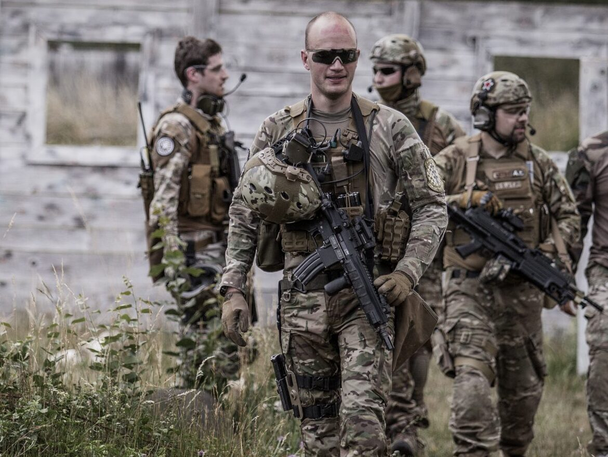

Les parties dominicales
Les parties du dimanche en airsoft sont des événements joués toute la journée, organisés par une équipe sur leur terrain. Ils incluent des règles de sécurité, des scénarios, un échauffement en début de journée, une pause repas, et la réparation d'équipement.